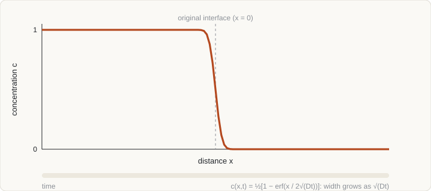
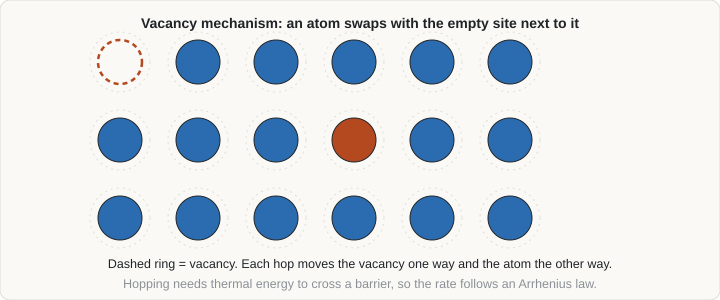

Diffusion and kinetics
Thermodynamics says where a material is heading; diffusion usually decides how fast it gets there. Homogenisation, carburising, precipitation, oxidation, sintering, creep and grain growth are all limited by how quickly atoms move.
- Write Fick’s laws and use the error-function and Gaussian solutions to estimate diffusion distances.
- Explain why the real driving force is a chemical-potential gradient, and when diffusion runs uphill.
- Relate the diffusion coefficient to atomistic jump mechanisms and the Arrhenius law.
- Outline how D is obtained by DFT, MD and kinetic Monte Carlo, and solve the diffusion equation with a stable finite-difference scheme.
1. Fick’s laws
Fick’s first law says that the flux J of atoms (amount per area per time) is proportional to the concentration gradient and directed down it:
J = −D ∇cThe proportionality constant D is the diffusion coefficient (m² s−1). Combining this with conservation of matter gives Fick’s second law, the diffusion equation:
∂c/∂t = ∇ · ( D ∇c ) → ∂c/∂t = D ∂²c/∂x² (constant D, one dimension)Two closed-form solutions cover many practical problems. For a diffusion couple or a surface held at fixed concentration, the solution involves the error function; for a thin film of total amount M per unit area spreading into a large body, it is a Gaussian:
Couple (step initial profile): c(x,t) = ½ (c1 + c2) − ½ (c1 − c2) erf( x / 2√(Dt) )Surface at cs (carburising): c(x,t) = cs − (cs − c0) erf( x / 2√(Dt) )
Thin film: c(x,t) = M / √(4πDt) · exp( −x² / 4Dt )

All three depend on x/√(Dt), so the affected distance grows as the square root of time, and a rule of thumb is the diffusion length ≈ 2√(Dt) (or √(Dt)). Doubling the distance takes four times as long. This is why the time to homogenise a segregated structure scales with the square of the segregation spacing: halving the dendrite arm spacing cuts the required time by four.
Worked example. Take carbon in ferrite with illustrative values D0 = 2×10−6 m² s−1 and Q = 84 kJ mol−1 at 700 °C (973 K): D = 2×10−6 exp[−84 000/(8.314 × 973)] ≈ 6×10−11 m² s−1. After one hour, √(Dt) ≈ 0.5 mm: carbon moves far in a thin sheet, while a substitutional element such as manganese, with a diffusivity many orders of magnitude lower at the same temperature, barely moves on the scale of a micrometre.
2. The true driving force
Fick’s first law with a constant D is an approximation. Atoms move to lower their free energy, so the driving force is the gradient of the chemical potential, not of concentration:
Ji = − Mi ci ∇μi → Di = Mi kBT · Θ, Θ = ∂ln ai / ∂ln ciwhere Mi is the atomic mobility and Θ the thermodynamic factor. In an ideal solution Θ = 1 and Fick’s law holds in its simple form. If unlike atoms attract, Θ > 1 and diffusion is faster than the intrinsic atomic mobility suggests; if like atoms attract so strongly that the Gibbs energy curve has negative curvature (inside the spinodal; see CALPHAD), Θ < 0 and the effective D is negative: atoms diffuse uphill against the concentration gradient, which is spinodal decomposition. Uphill diffusion also occurs in alloys of multiple elements even outside a miscibility gap: in Darken’s classic experiment, carbon moved out of a high-silicon steel into a plain steel that started with the same carbon content, because silicon raises the chemical potential of carbon.
Two practical consequences. First, mobilities are the fundamental kinetic quantity, and CALPHAD-style databases store them as functions of composition and temperature next to the thermodynamics. Second, in a binary substitutional couple the interdiffusion coefficient combines the two intrinsic mobilities (Darken):
D̃ = ( xB D*A + xA D*B ) ΘThe two species typically have different tracer diffusivities D*, so a net flow of vacancies accompanies the net atomic flux; inert markers placed at the original interface then shift relative to the ends of the specimen. This is the Kirkendall effect, and it can leave pores (Kirkendall voids) on the fast-diffusing side.
3. Atomistic mechanisms
An atom in a crystal sits in a potential well and occasionally gains enough thermal energy to jump to a neighbouring site. The pathway depends on the type of atom and the defects present:
- Vacancy mechanism. A substitutional atom swaps with a neighbouring vacancy. It is the dominant route for self-diffusion and for substitutional solutes (Mn, Cr, Ni in iron; Cu in aluminium). Atoms can only move when a vacancy is next to them, so the rate involves both the vacancy concentration and the jump rate.
- Interstitial mechanism. Small solutes (C, N, H, O) hop between interstitial sites without needing a vacancy. These jumps are fast, with low activation energy, which is why carbon equilibrates in steel in minutes while alloying elements do not.
- Short-circuit paths. Grain boundaries, dislocation cores and free surfaces have an open structure and diffusivities that can be many orders of magnitude higher than in the lattice, dominating at low temperature and in fine-grained or heavily deformed material.
- Others. Interstitialcy (a displaced pair), ring and exchange mechanisms matter in some systems, for example in covalent semiconductors.

4. Temperature dependence
A hop requires crossing an energy barrier Em (the migration energy). The jump rate is thermally activated, and the diffusion coefficient follows an Arrhenius law:
D = D0 exp( −Q / RT )Plotting ln D against 1/T gives a straight line of slope −Q/R, and a change of slope signals a change of mechanism (for example lattice to grain-boundary diffusion). The microscopic content comes from the random-walk theory: for jumps of length λ at total rate Γ, D = Γλ²/6 in three dimensions. For vacancy diffusion in a cubic crystal this becomes
D = f a² ν exp( −(Ef + Em) / kBT ) (fcc; vibrational entropy factors omitted)where f is the correlation factor (about 0.78 for fcc and 0.73 for bcc, since a tracer atom is slightly more likely to jump back into the vacancy it just left than elsewhere), a the lattice parameter, ν an attempt frequency, and the activation energy of self-diffusion is Q = Ef + Em, vacancy formation plus migration. For interstitial diffusion, Q = Em only, because the available interstitial sites are always there.
A useful sanity check is the empirical rule that Q for vacancy self-diffusion in close-packed metals is about 17 to 18 RTm, where Tm is the melting temperature. For copper (Tm = 1358 K) this gives about 200 kJ mol−1, close to the measured value of roughly 200 kJ mol−1. It means that diffusion at a given fraction of the melting temperature (the “homologous temperature”) is similar across many metals.
5. Computing D
Several complementary routes exist, matched to how fast the species moves.
| Method | What it gives | Strength | Limit |
|---|---|---|---|
| Molecular dynamics | D from the mean-squared displacement, D = lim MSD/(6t); or from the velocity autocorrelation integral | Direct, includes all anharmonicity; ideal for liquids, fast ionic conductors, grain boundaries at high T | Only practical for D above roughly 10−11 m² s−1 within nanoseconds, so lattice diffusion in solids is out of reach well below the melting point |
| DFT + transition-state theory | Ef, Em (nudged elastic band), attempt frequency ν from phonons (Vineyard), then D by the formula above | Parameter-free; works for any T; resolves each solute–vacancy interaction | Needs many calculations; assumes harmonic transition-state theory and a defined mechanism |
| Five-frequency model (Lidiard–LeClaire) | Solute diffusion and vacancy drag in dilute fcc alloys from five jump frequencies computed by DFT | Compact route from DFT to solute D and the Onsager coefficients | Dilute limit; fcc geometry (other lattices need extensions) |
| Kinetic Monte Carlo | D from the MSD of tracer atoms in a lattice with environment-dependent barriers | Reaches physical time for slow diffusion; handles concentrated alloys and correlations | Needs the barrier model (see Monte Carlo) |
| Databases and assessment | Mobility parameters fitted to experiments | Directly usable in diffusion codes with thermodynamic data | Only for systems already assessed |
Whichever route is used, results should be compared with experiments at one or more temperatures. Agreement within a factor of two in D is considered good, because a 0.1 eV error in the barrier changes D by a factor of about 3 at 1000 K and by about 10 at 500 K.
6. Solving the equation numerically
When D depends on composition, when several phases are present, or when the geometry is complicated, there is no closed-form solution and the equation is solved on a grid. For one dimension with spacing Δx and time step Δt, the simplest scheme is the explicit (forward-time, centred-space) method:
cin+1 = cin + r ( ci+1n − 2cin + ci−1n ), r = D Δt / Δx²It is stable only if r ≤ ½ (and r ≤ 1/4 in two dimensions, 1/6 in three); exceeding it makes errors grow exponentially and the solution oscillate. Refining the grid by a factor of two forces the time step down by four, so explicit schemes become expensive. Implicit schemes (backward Euler) are stable for any step; they require solving a tridiagonal linear system at each step, which is cheap in one dimension. The Crank–Nicolson average of the two is second-order accurate in time. For conserving the total amount of solute, which matters in diffusion couples, a finite-volume formulation (fluxes across cell faces) is preferred.
Boundary and interface conditions
- Fixed concentration (Dirichlet): a surface in equilibrium with a carburising atmosphere.
- Zero flux (Neumann): a symmetry plane or an impermeable wall.
- Mass-transfer (Robin): the flux at the surface is J = β(cgas − csurface), with a finite transfer coefficient β.
- Moving interface between phases α and β: concentrations on either side are set by local equilibrium (from thermodynamics) and the interface velocity v follows from solute conservation, (cβ − cα)v = Jα − Jβ. This Stefan-type problem is the basis of diffusion-controlled transformation models in steels.
An explicit solver in Python, with the surface held at c = 1 and zero flux at the far end, fits in a few lines. The time step is chosen with r = 0.2 for safety:
import numpy as np
D, L, nx = 1e-11, 1e-3, 201 # m^2/s, m, grid points
dx = L / (nx - 1)
dt = 0.2 * dx**2 / D # r = D*dt/dx^2 = 0.2 (stable: r <= 0.5)
c = np.zeros(nx); c[0] = 1.0 # surface at c = 1, initially empty
t = 0.0
while t < 3600: # one hour
c[1:-1] += D * dt / dx**2 * (c[2:] - 2*c[1:-1] + c[:-2])
c[0], c[-1] = 1.0, c[-2] # fixed surface, zero flux at the far end
t += dtCompare the result with the error-function solution c = 1 − erf(x/2√(Dt)) as a first verification, then change r to 0.6 and watch the solution blow up.
7. Multicomponent diffusion
In an alloy with several solutes, the flux of each element depends on the gradient of all the others:
Ji = − Σj Dij ∇cjThe full Dij matrix has off-diagonal terms (cross-diffusion) of either sign, and Onsager reciprocity constrains it. Practically, one works with chemical potentials and mobilities, Ji = −Σj Lij ∇μj, with mobilities from a database and thermodynamics from CALPHAD, so cross effects (like carbon moving in a silicon gradient) come out automatically. The difference between interstitial and substitutional diffusivities, often six or more orders of magnitude, makes the equations stiff and motivates special treatments such as paraequilibrium, where carbon redistributes while substitutional elements are frozen.
8. From diffusion to microstructure
Diffusion enters models of microstructure change in a few standard ways.
- Nucleation. Classical nucleation theory gives the barrier for a spherical nucleus, ΔG* = 16πγ³/(3ΔGv²), where γ is the interface energy and ΔGv the volume driving force (from CALPHAD, less any strain energy); the rate is proportional to exp(−ΔG*/kBT) times an atom-attachment term controlled by diffusion.
- Growth. Diffusion-controlled growth of a particle or plate is parabolic in time: thickness or radius ∝ √(Dt), with a proportionality set by the supersaturation.
- Coarsening. Small precipitates dissolve and large ones grow because of the Gibbs–Thomson effect (higher solubility around curved surfaces). The Lifshitz–Slyozov–Wagner (LSW) theory gives r3 − r03 = Kt, with K proportional to D, γ and the equilibrium solubility, which sets how long strengthening precipitates stay fine at service temperature.
- Overall transformation kinetics. The Johnson–Mehl–Avrami–Kolmogorov equation, f = 1 − exp(−ktn), combines nucleation and growth into a sigmoidal fraction-transformed curve; the exponent n hints at the mechanism.
Models that resolve the microstructure itself, such as phase-field, solve diffusion and interface motion together.
9. Check your understanding
A homogenisation anneal takes 10 hours for segregation with a 100 µm spacing. How long for a 50 µm spacing at the same temperature?
The time scales as the square of the length (t ∝ x²/D), so halving the spacing needs one quarter of the time: 2.5 hours.
Why is the activation energy of vacancy self-diffusion larger than the migration energy alone?
An atom can only move if a vacancy is adjacent, and vacancies must be created thermally at an energy cost Ef. The equilibrium vacancy fraction contributes a factor exp(−Ef/kBT), so the total activation energy is Ef + Em.
Your explicit diffusion solver gives wild oscillations. What do you check first?
The stability number r = DΔt/Δx². It must be at most 0.5 in one dimension. Reduce Δt (or coarsen Δx), or switch to an implicit scheme.
10. References and further reading
- Crank, J., The Mathematics of Diffusion, Oxford University Press (1975).
- Shewmon, P., Diffusion in Solids, Springer.
- Mehrer, H., Diffusion in Solids: Fundamentals, Methods, Materials, Diffusion-Controlled Processes, Springer (2007).
- Balluffi, R. W., Allen, S. M. and Carter, W. C., Kinetics of Materials, Wiley (2005).
- Porter, D. A., Easterling, K. E. and Sherif, M. Y., Phase Transformations in Metals and Alloys, CRC Press.
- Darken, L. S., Diffusion, mobility and their interrelation through free energy in binary metallic systems, Trans. AIME 175, 184 (1948); Darken, L. S., Diffusion of carbon in austenite with a discontinuity in composition, Trans. AIME 180, 430 (1949).
- Smigelskas, A. D. and Kirkendall, E. O., Zinc diffusion in alpha brass, Trans. AIME 171, 130 (1947).
- Vineyard, G. H., Frequency factors and isotope effects in solid state rate processes, J. Phys. Chem. Solids 3, 121 (1957).
- Andersson, J.-O. and Ågren, J., Models for numerical treatment of multicomponent diffusion in simple phases, J. Appl. Phys. 72, 1350 (1992).